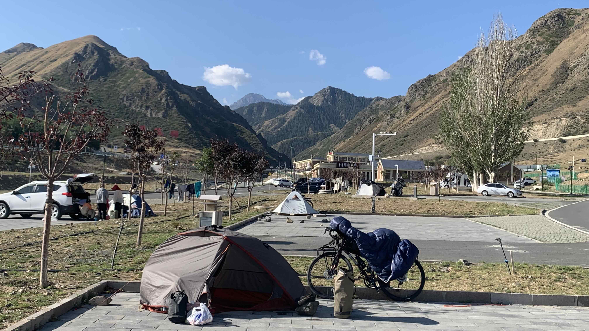
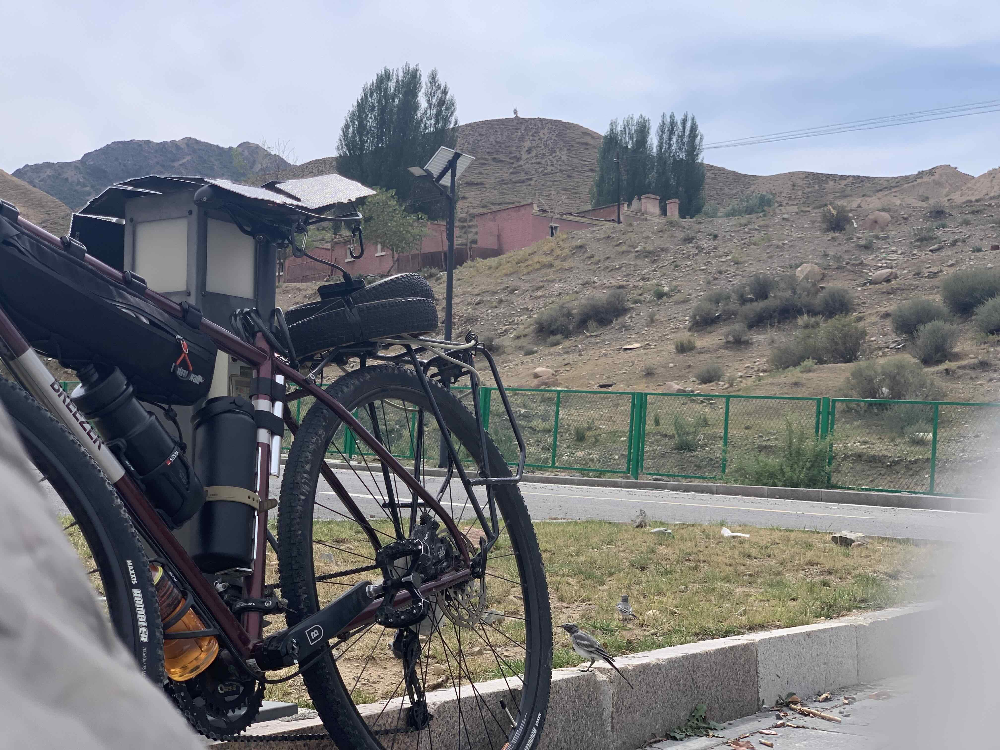
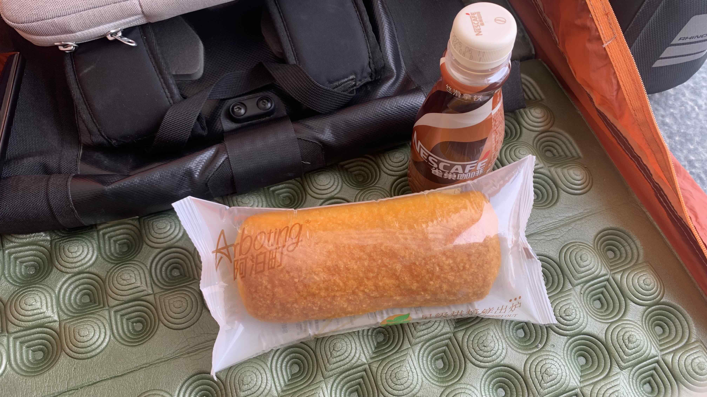
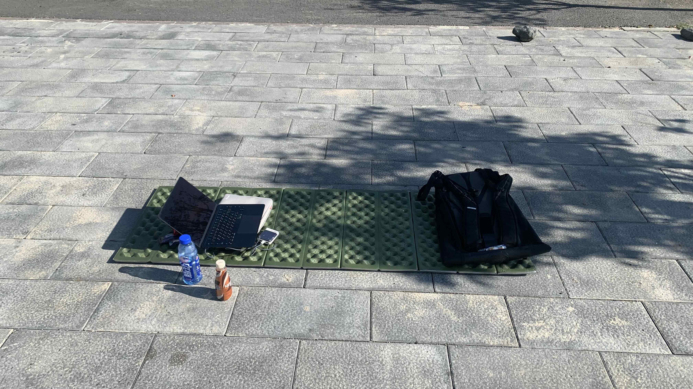
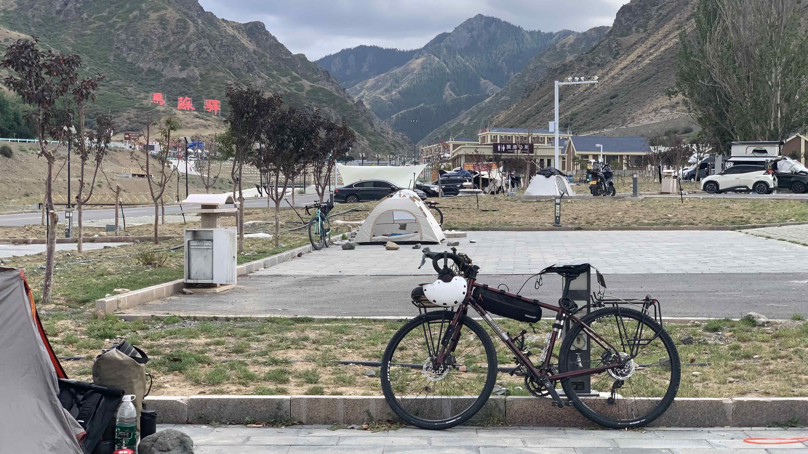
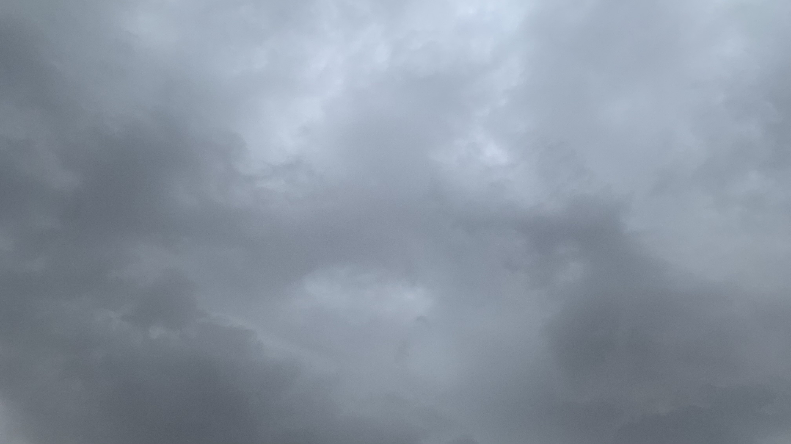
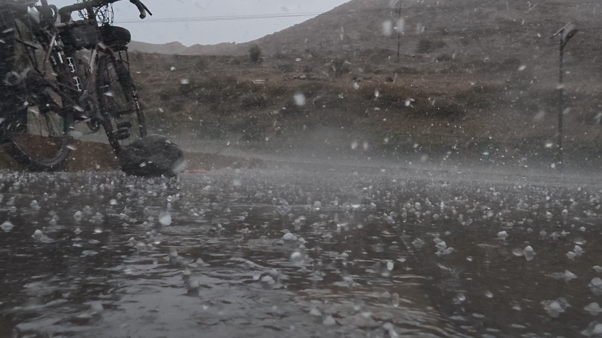
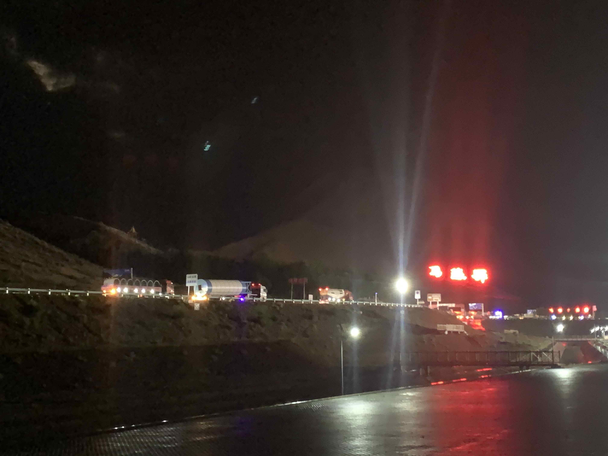

k-Day 146-147｜獨庫公路（二）封路
在帳篷裡聽到外面的旅人們正在分享路況資訊，立刻拉開拉鍊探出頭加入討論。今天仍然無法上山，隔壁的休旅車夫婦已經在這裡等了三天，他們決定聽從另一輛車的建議，放棄獨庫改道伊寧，走昭蘇公路南下。
「你騎自行車會繞太多路，你在這裡等，估計三十號能通車。」夫婦倆和隔壁的旅人都這樣對我說。
休旅車夫妻離開後，隔壁的旅人指著橋對面的營地說：「你可以到那裡露營，是免費的，有廁所，還安靜。」

營地已經有許多同樣等待上山的人，牽著二十三號走到最角落，看到一座白色單人帳，旁邊停著一輛城市自行車，就搭在他附近吧。
沒啥事可做，拉出睡袋曬太陽，到餐廳附設的小賣部買水和糧食，是景區價。

有兩隻灰色小鳥在帳篷邊聊天。

午餐吃椰子麵包和雀巢咖啡，椰子麵包一樣沒滋沒味。

帳篷裡面太熱，把睡墊拉到陰影下寫日誌，不知道要在這裡等幾天，也不敢太過放肆把電行動電源耗盡。
向隔壁的自行車騎士探聽了修路進度，他說每天早上才會公布，必須追蹤這裡的抖音帳號，或者到橋邊詢問交警。

29號，今天依然封路。旁邊的營位又多了一座單人帳和一輛公路車，也是準備上山的。
聽他們說明天可以上山，心情又緊張起來。搬了一塊石頭坐在二十三號旁，開始擦車滴鍊條油平復心情。

天空看來不太妙，怕是要下雨了。

瞬間落下無數冰珠，營區內所有人都躲進自己的車子和帳篷裡。拉開一道縫隙把相機推出去，拍下這段影片。
已經習慣頂部滴水，這次連底部和側面都不斷漏水。

晚上十一點左右，外面的聲音似乎減緩，爬到帳篷外，卡車們又摸黑上山，這樣的天氣還能施工實在不簡單。
今日花費： 水＋食物 130元